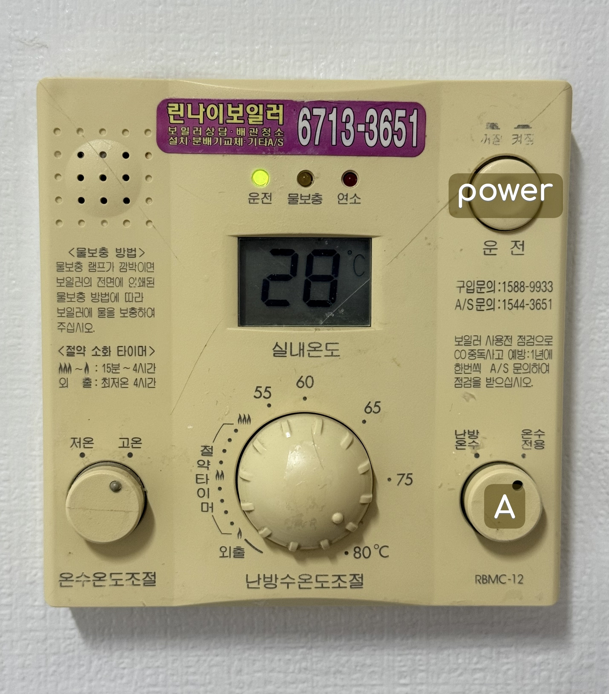

난방 사용법 - heating system including hot water
-

파워를 눌러 전원을 켜주세요. 숫자가 나타난다면 전원이 켜진겁니다
Press the power to turn it on. If a number appears, it's turned on
- A 버튼이 왼쪽으로 돌리면 바닥과 물이 둘다 따듯해집니다
If button A turns to the left, both the floor and the water become warm
- A 버튼이 오른쪽으로 돌리면 물만 따듯해집니다
If button A turns to the right, only the water becomes warm